목적(제1조): 전자정부법 제57조제5항에 따른 정보시스템 감리의 업무범위·절차·준수사항과, 시행령에서 위임한 감리법인 등록·감리원 자격·교육·감리원증 발급 등을 정함.
감리보고서는 감리 및 시정조치확인 결과를 기록한 보고서로, 감리수행결과보고서와 시정조치확인보고서로 구성된다.
감리 실시시기 – 3단계 vs 2단계 ★★★
구분
내용
3단계감리(원칙)
요구정의 · 설계 · 종료 단계로 실시
2단계감리(예외)
사업비 20억원 미만또는 사업기간 6개월 미만인 경우 가능. 이때 발주자가 요구사항정의서의 과업내용 반영여부를 직접 점검
상주감리 추가
단계별 감리 외 추가 가능. 상주감리 추가 시 요구정의단계 감리는 생략하고 상주감리원이 과업내용 반영여부를 직접 점검
💡 Tip · 조건 함정
2단계감리는 "20억 미만 또는 6개월 미만"(둘 중 하나)이면 가능하다. "20억 미만 이고 6개월 이상이면 3단계"라는 서술은 조건을 뒤튼 오답이다.
▸ 원본 p.82 표 복원: 감리 제안서 기술평가 기준 – 제안서 평가 기준에 다음 평가 항목이 있음
평가항목
세부평가요소
점검내용
ㆍ감리대상사업의 특성 등을 감안하여 주요 위험요소와 예상문제점을 적정하게 도출하였는지 여부 ㆍ도출된 위험요소 및 예상문제점을 반영하여 단계별로 점검사항을 적정하게 도출ㆍ제시하였 는지 여부
점검방법
ㆍ과업이행여부, 기술적용계획표 등 필수점검사항에 대한 점검방법을 구체적으로 제시하였는지 여부 ㆍ점검결과의 객관성ㆍ타당성 확보를 위한 점검 기법ㆍ방법을 구체적으로 제시하였는지 여부
감리일정 및 절차
ㆍ감리대상사업 단계별 감리일정 및 세부 감리절차를 적정하게 제시하였는지 여부 ㆍ각 단계별 시정조치확인에 투입되는 감리인력, 기간, 수행방법 등을 구체적으로, 적정하게 제 시하였는지 여부
감리인력 구성
ㆍ분야별 위험도 및 업무량 등을 감안하여 적정 수준의 감리인력을 배치하였는지 여부 ㆍ상근감리원의 비율
총괄감리원
ㆍ총괄감리원이 업무수행을 위해 필요한 기술자격, 유사 업무ㆍ감리 수행경력 등 전문성을 갖 추었는지 여부
각 분야별 감리인력
ㆍ투입 감리인력(다른 분야 전문가 포함)이 담당분야와 관련된 업무 또는 감리 수행경력 등 전 문성을 갖추었는지 여부 ㆍ투입 감리원(총괄감리원 포함)의 계속교육 이수실적(이수한 교육의 종류 및 시간)
기타 지원사항 등
ㆍ감리수행절차 또는 감리보고서 품질향상을 위해 감리법인 차원에서 체계적인 교육훈련 또는 품질관리 등을 수행하고 있는지 여부 ㆍ시험ㆍ진단 또는 점검을 체계적으로 수행하기 위한 자동화 도구 및 기법 등을 적정하게 제안 하였는지 여부 ㆍ기타 발주자가 제안요청한 사항(감리범위 및 인력투입 등)에 대하여 적정하게 제안하였는지 여부
Q. '정보시스템 감리기준' 설명 중 가장 거리가 먼 것은?
사업비 20억원 미만이고 사업기간 6개월 이상이면 3단계감리를 하여야 한다.
상주감리를 추가하면 요구정의단계 감리는 생략하고 상주감리원이 직접 점검한다.
감리인력은 전체 투입공수의 50% 이상을 상근 감리원으로 배치한다.
감리보고서에는 감리수행결과보고서와 시정조치확인보고서가 있다.
정답 ① — 20억 미만 또는 6개월 미만이면 2단계감리가 가능하다. "20억 미만이고 6개월 이상이면 3단계"는 틀린 서술.
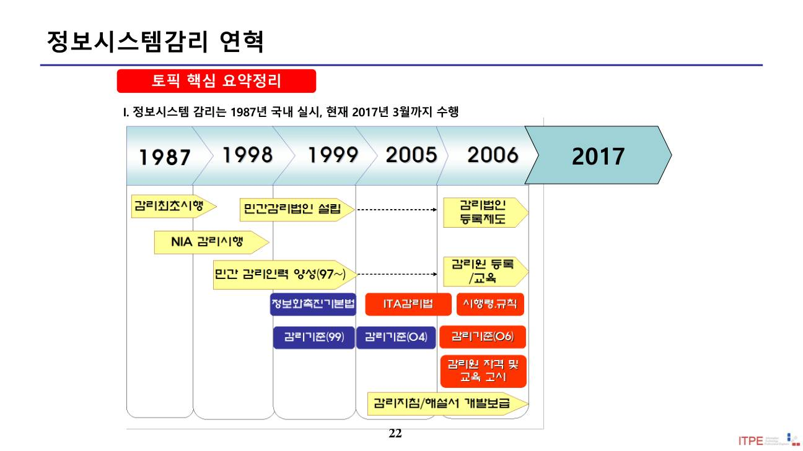
📄 원본 슬라이드 p.22 (추출 곤란 도표·ITO)
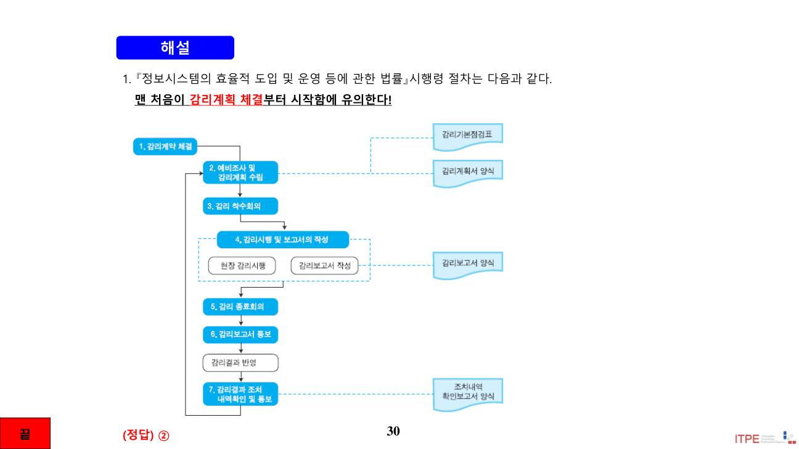
📄 원본 슬라이드 p.30 (추출 곤란 도표·ITO)
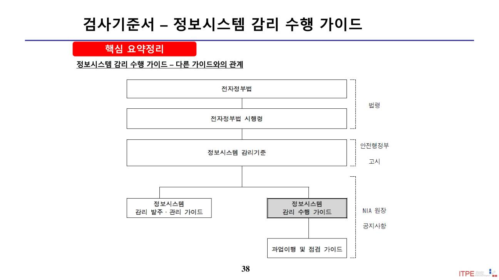
📄 원본 슬라이드 p.38 (추출 곤란 도표·ITO)
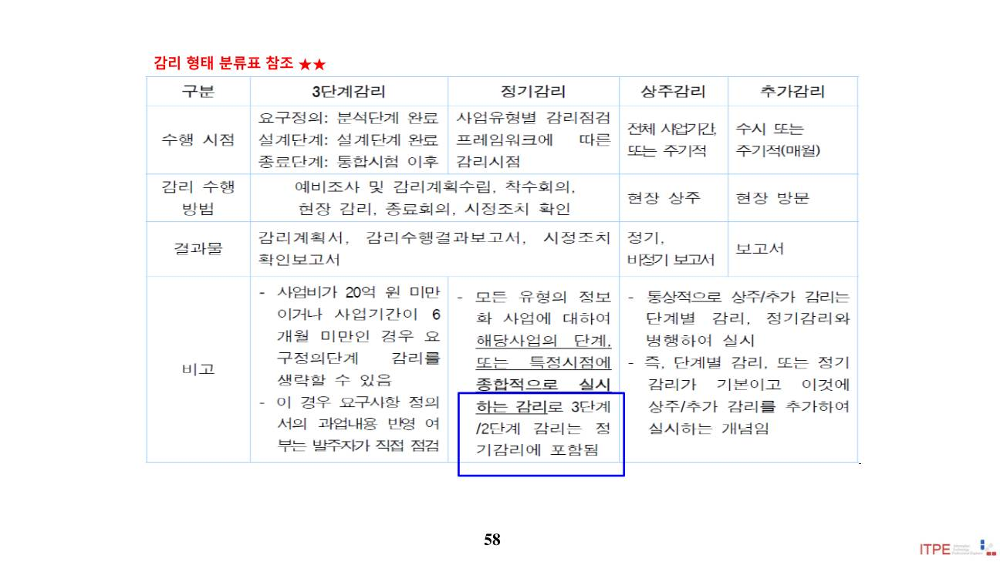
📄 원본 슬라이드 p.58 (추출 곤란 도표·ITO)
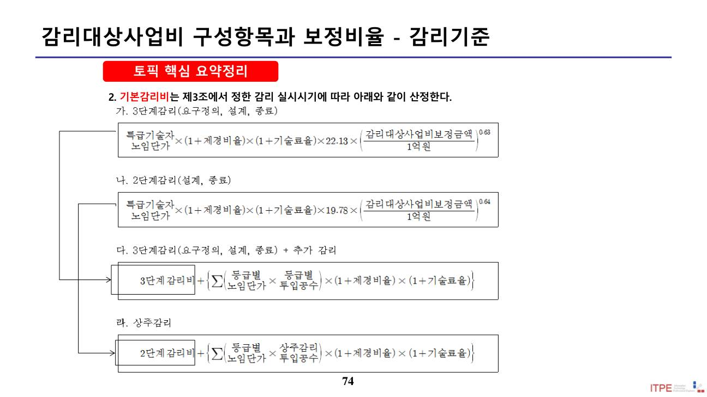
📄 원본 슬라이드 p.74 (추출 곤란 도표·ITO)
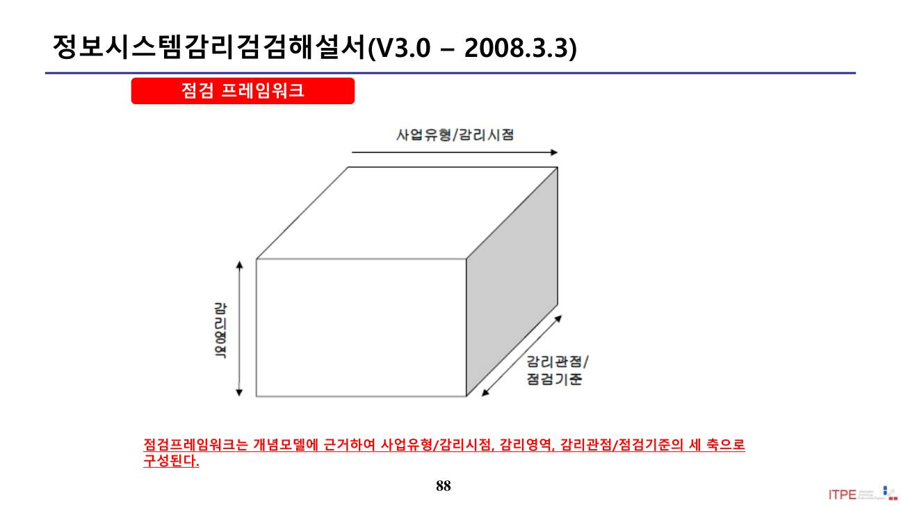
📄 원본 슬라이드 p.88 (추출 곤란 도표·ITO)
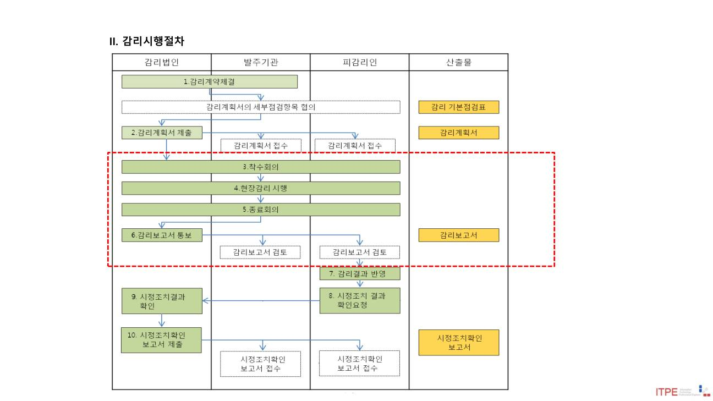
📄 원본 슬라이드 p.93 (추출 곤란 도표·ITO)
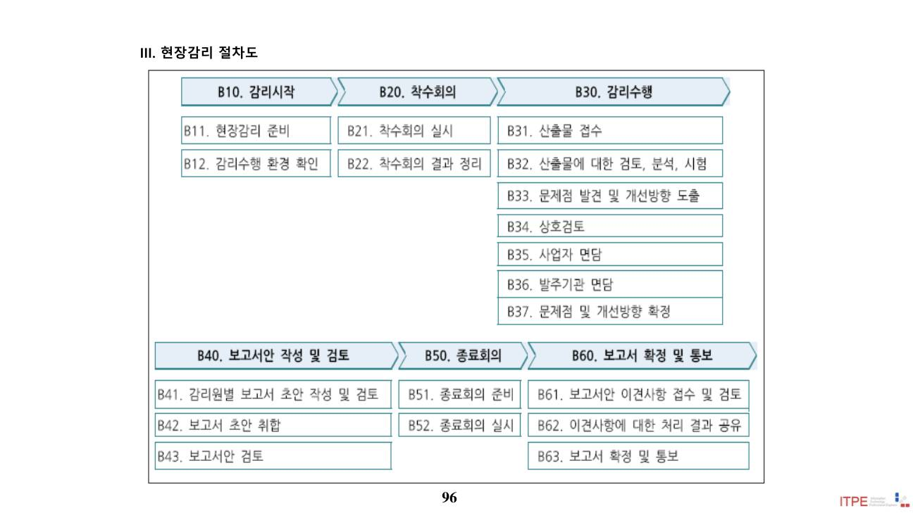
📄 원본 슬라이드 p.96 (추출 곤란 도표·ITO)
3. 상주감리원
감리원 자격은 기술능력에 따라 감리원 · 수석감리원 2등급이다. 상주감리는 사업 현장에 상주·주기 투입되어 사업관리 지원·자문을 수행한다.
배치 자격 – "20-3-3" ★★★
상주감리를 하는 경우, 다음 중 하나에 해당하는 수석감리원을 상주감리원으로 배치한다.
감리대상 사업비 20억원 이상 감리에 참여한 경력 3회 이상
PM(프로젝트관리) 또는 QA(품질관리) 분야 경력 3년 이상
그 밖에 발주자가 적합하다고 인정한 수석감리원
상주감리원 업무(제10조의2)
과업 범위(요구사항) 구체화, 과업변경 영향·타당성 검토
상세공정표에 따른 계획 대비 실적 점검 및 이행상태 확인
산출물에 대한 품질 검토, 쟁점사항 기술검토 지원·의견조율
결과를 정기적으로 발주자에게 보고
💡 Tip · 핵심 함정
상주감리원은 수석감리원이어야 한다("발주자가 인정한 감리원"으로 낮춰 쓰면 오답).
상주감리원은 단계별 감리의 감리원으로 참여할 수 없다(객관성 보장). "정보 공유 위해 참여"는 오답.
암기 "총상수(총괄감리원=상근 중 수석감리원), 1상(1년 이상 투입·상근)".
Q. 감리기준에 따른 상주감리원 설명으로 가장 적절한 것은?
감리법인이 인정하는 감리원은 상주감리원이 될 수 있다.
실제 감리 투입기간 1년 이상인 수석감리원만 상주감리원이 될 수 있다.
상주감리원은 산출물 품질 검토, 쟁점사항 의견조율을 수행한다.
상주감리원은 단계별 감리에 참여하여 정보를 공유하고 감리보고서를 작성한다.
정답 ③ — ① '발주자'가 인정한 '수석감리원'(X), ② '1년 이상'은 '총괄감리원' 요건(X), ④ 상주감리원은 단계별 감리에 참여 불가(X).
4. 감리인력 배치
감리인력은 자격(수석감리원·감리원)·고용(상근·비상근)·업무(총괄·상주·전문가) 기준으로 구분되며, 배치 규정이 엄격하다.
구분
내용
총괄감리원
실제 감리 투입기간 1년 이상인 수석감리원 중, 총괄 능력·경험을 갖춘 상근 감리원으로 배치
상근 비율
감리인력의 50% 이상을 해당 감리법인 소속 상근 감리원으로 배치 (예: 7명이면 4명 이상)
전문가
총괄감리원 책임하에 지원·자문만 수행 (직접 감리 수행·보고서 작성 불가)
💡 Tip · 배치 규정 함정
전문가는 특정 영역(예: 시스템구조)의 감리를 직접 수행할 수 없다(지원·자문만). 총괄감리원과 상주감리원을 동일인으로 배치하는 것도 안 된다(상주감리원은 단계별 감리 참여 금지). 상근 50% 요건도 자주 출제된다.
5. 감리기준 해설서 – 대상·업무범위·절차
감리법인의 업무범위(전자정부법 제72조 / 시행령 제12조)
사업 목표의 달성 및 요구사항 충족 여부 검토·확인
활동 및 산출물의 품질에 대한 검토·확인
정보시스템의 효율성·안전성 검토 등 감리기준에서 정하는 사항
감리 절차 ★★
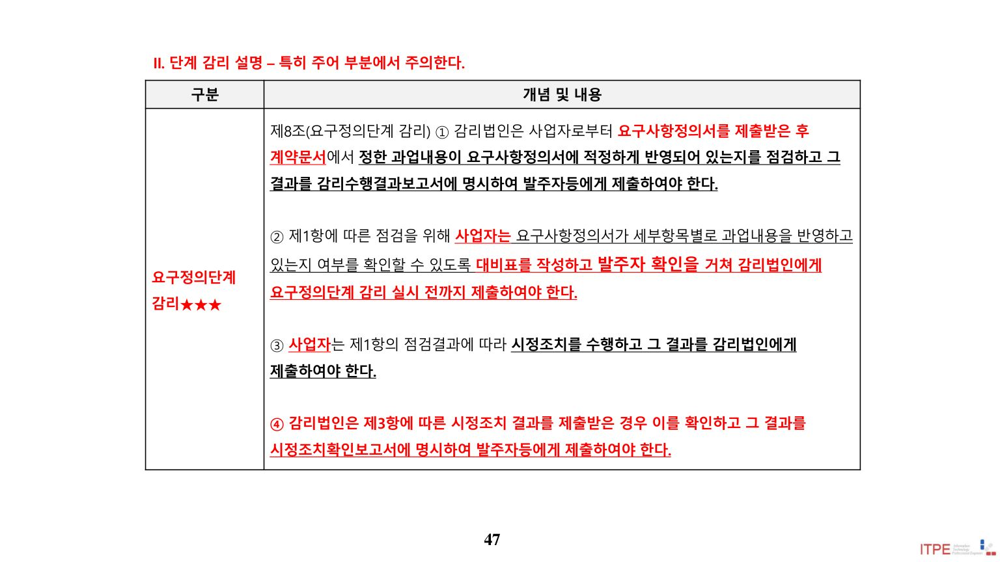
감리 절차 – 계약 → 예비조사·감리계획 → 착수회의 → 현장감리 시행 → 시정조치확인 (원본 슬라이드)
감리계약 체결 → 예비조사 실시 및 감리계획 수립 → 감리 착수회의 → 감리 시행(현장감리) → 시정조치확인. (수행 형태에 따라 일부 절차 변경·생략 가능)
💡 Tip
감리 대상 여부(사업 규모·유형)와 "10억원 규모 ISP 수립 사업" 같은 사례의 감리대상 해당 여부를 묻는 문제가 나온다. 감리절차의 예비조사 → 현장감리 → 시정조치확인 3단계 흐름을 정확히 기억한다.
6. 감리 수행가이드(V2.1)
감리기준을 실무적으로 구체화한 가이드(2013.12)로, 과업 이행여부 판단 기준, 시정조치 확인 절차, 감리수행결과보고서 양식 등을 제시한다.
시정조치 확인 세부절차
시정조치 결과 확인계획 공유 → 시정조치 결과 확인 → 상호 검토 → 발주자/사업자 면담 → (조치 결과 반영)
💡 Tip · 과업이행 판단
감리원이 직접 테스트 불가능한 기능·비기능 과업은 사업자 제출 증빙문서를 검토하여 판단한다. "선행 기능 오류로 잔여 기능을 확인 못한 경우 모두 부적합 처리"는 틀린 서술(오류 영향 범위를 구분해 판단). 감리수행결과보고서 양식에 '감리영역별 평가'는 포함되지 않는다.
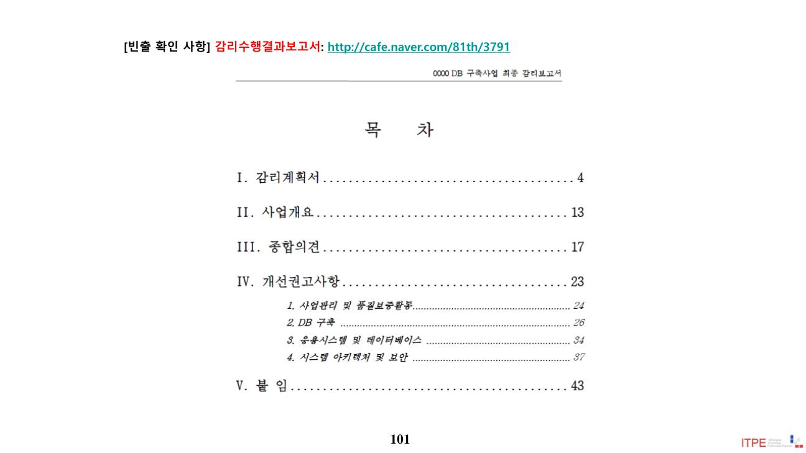
📄 원본 슬라이드 p.101 (추출 곤란 도표·ITO)
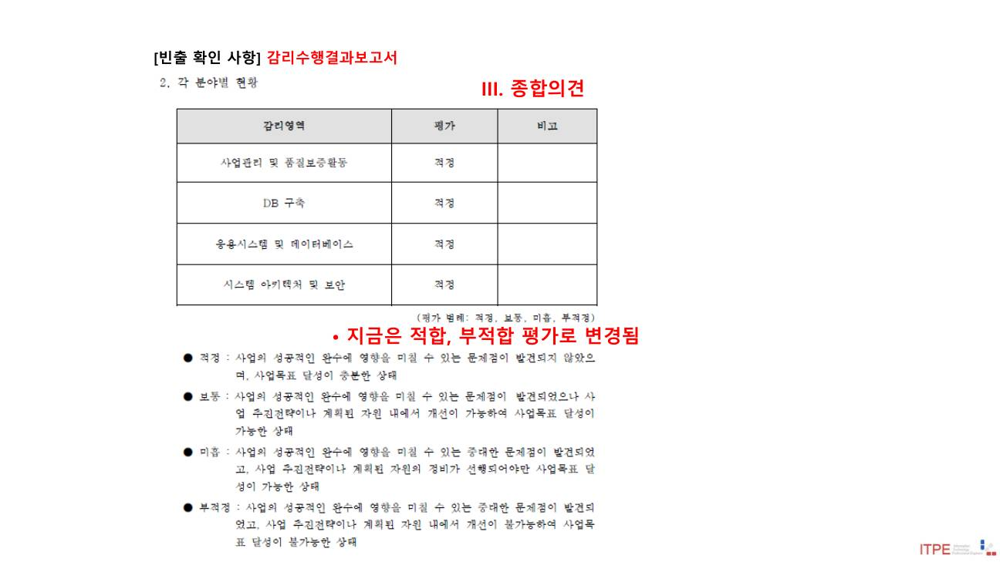
📄 원본 슬라이드 p.102 (추출 곤란 도표·ITO)
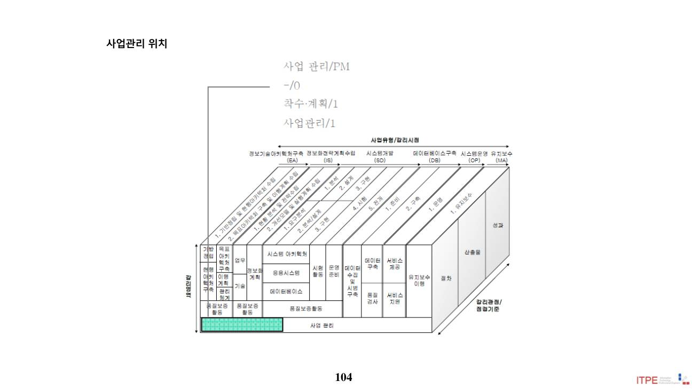
📄 원본 슬라이드 p.104 (추출 곤란 도표·ITO)
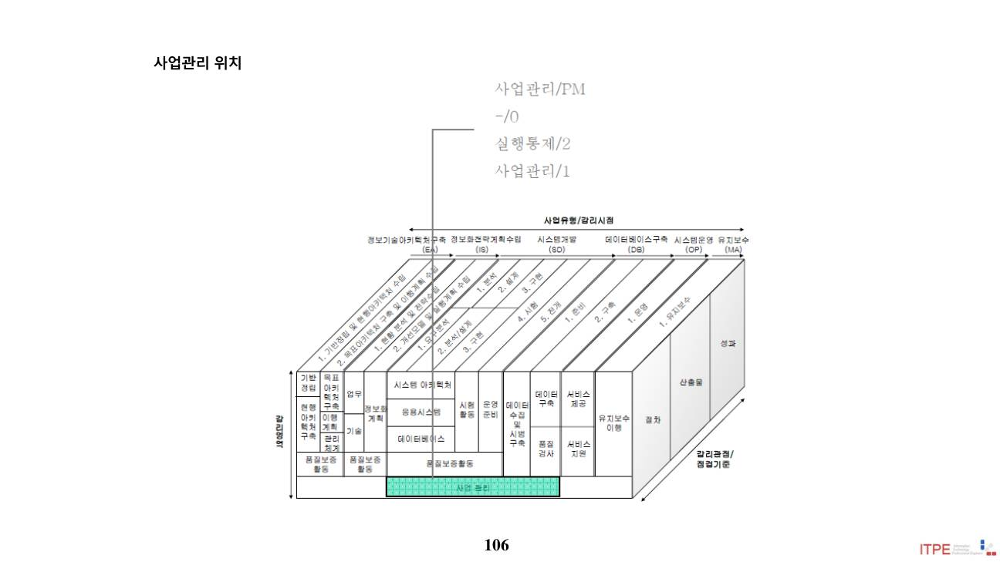
📄 원본 슬라이드 p.106 (추출 곤란 도표·ITO)
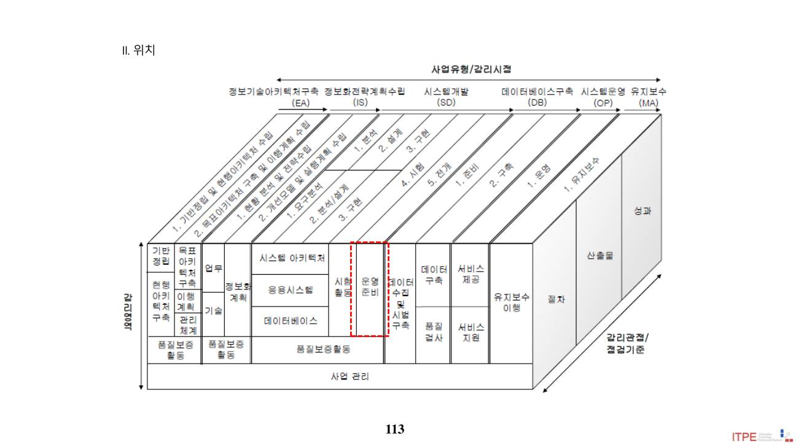
📄 원본 슬라이드 p.113 (추출 곤란 도표·ITO)
7. 감리 발주 및 계약
발주자는 감리를 사전에 발주하고 협상에 의한 계약을 우선 적용하며, 감리법인은 사업·사업자에 대한 독립성을 확보해야 한다.
구분
내용(제6조)
사전 발주
발주자는 감리를 할 수 있도록 사전에 감리를 발주
계약방식
「국가계약법 시행령」에 따라 협상에 의한 계약체결 방법을 우선 적용 가능
독립성
감리법인은 감리대상사업·사업자에 대한 독립성을 확보해야 하며, 사업자와 감리계약을 체결할 수 없음
보정금액 = 각 구성항목 금액 × 보정비율을 합산한 값. 예) 2차 사업비 30억 중 SW개발 20억(보정 1.00) → 보정금액 20억.
💡 Tip · 계산 요령
각 항목 금액에 항목별 보정비율을 곱해 더한다. SW개발·유지보수는 1.00, DB구축·HW구입은 1.00보다 작다. 여러 사업의 감리대가 크기 비교 문제는 "금액 × 보정비율"만 계산하면 된다(예: DB 10억×0.422 = 4.22억).
9. 감리교육
감리교육은 감리원이 받아야 하는 교육으로, 시행령 별표 4에 따른 기본교육 · 전문교육 · 계속교육이다(암기 "기전계").
교육
내용·요건
기본교육
감리 수행능력 배양을 위한 교육(감리원증 교부 요건)
전문교육
전문 능력 배양 교육. 수석감리원은 전문교육 50시간 이상
계속교육
능력 유지를 위한 교육. 3년간 총 40시간 이상
💡 Tip · 면제정보시스템 감리사 교육과정을 이수하면 기본교육 또는 전문교육이 면제된다. 법령·감리기준 개정 등 경미한 변경사항은 교육자료 배포로 계속교육을 갈음할 수 있다.
10. EA 사업유형
EA(Enterprise Architecture, 정보기술아키텍처) 관련 감리 사업유형의 위치와 점검 관점을 다룬다. EA 구축 감리는 업무·응용·데이터·기술·보안 아키텍처의 현행·목표 정의와 이행계획·관리체계를 점검한다(M04 ITA 참조).
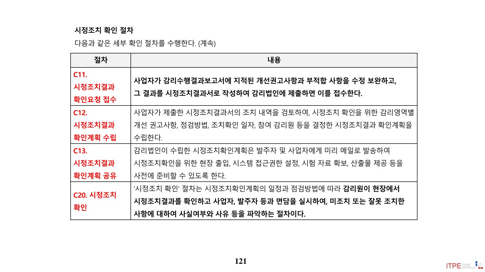
EA 사업유형의 위치 (원본 슬라이드)
💡 Tip
EA(ITA) 감리는 정보화전략(ISP)·시스템개발(SD)과 감리 관점이 다르다. "정보시스템에 대한 요건정의 및 개선과제 도출의 적정성"은 ISP(기술) 영역의 점검항목이다.
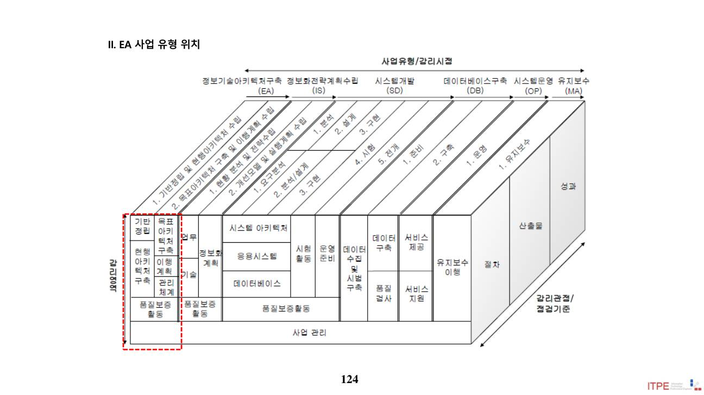
📄 원본 슬라이드 p.124 (추출 곤란 도표·ITO)
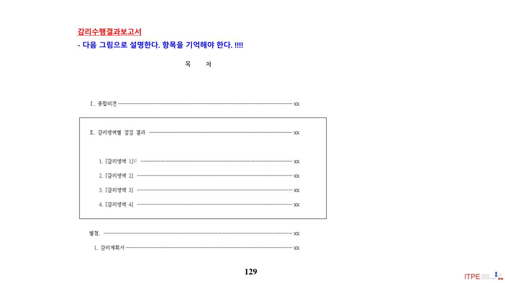
📄 원본 슬라이드 p.129 (추출 곤란 도표·ITO)
11. 정보시스템 감리원 윤리 가이드 (2014, NIA)
감리원의 윤리 의식 제고와 권위 확보를 위한 가이드로, 윤리강령(code of ethics)은 구성원이 지향해야 할 가치를 담은 윤리지침이다.
윤리강령 준수를 위협하는 요인 4종 ★★
위협
내용
이기적 위협
감리원 본인이 재무적 또는 기타 이해관계가 있는 경우 발생 (암기 "이재")
자기검토 위협
과거 본인이 판단한 사항을 다시 검토하게 되는 경우
유착 위협
밀접한 관계로 타인의 이익에 지나치게 동정적이 되는 경우
압력 위협
현실적·잠재적 협박 가능성 때문에 공정하지 못하게 되는 경우
Q. 감리원 본인이 재무적 이해관계가 있어 발생하는 윤리 위협은?
이기적 위협
자기검토 위협
유착 위협
압력 위협
정답 ① — 본인의 재무적·기타 이해관계에서 비롯되는 것은 이기적 위협이다(암기 "이재").
💡 Tip · 4대 위협 암기이기적 · 자기검토 · 유착 · 압력 위협. "이재(이기적=재무적 이해관계)"로 대표 사례를 기억하면 구분이 쉽다.
📚 전체 기출·예상문제 (27문항) — 원문 수록
본 강좌 원본 PDF에 수록된 기출·예상문제를 빠짐없이 원문 그대로 정리했습니다. 정답·해설은 강의 원문 기준입니다.
Q1. 1. “정보시스템 감리기준”에 관한 설명 중 가장 거리가 먼 것은? (원본 p.10)
감리대상사업의 사업비가 20억원 미만이고 사업기간이 6개월 이상이면 3단계감리를 하여야 한다.
단계별 감리 외에 상주감리를 추가로 하는 경우 요구정의단계 감리는 생략하고, 상주감리원이 요구사항정의서의 과업내용 반영여부 등을 직접 점검하여야 한다.
감리인력은 전체 투입공수의 50% 이상을 해당 감리법인 소속의 상근 감리원으로 배치하여야 한다.
‘감리보고서’에는 ‘감리수행결과보고서’와 ‘시정조치확인보고서’가 있다.
정답 원문 강의자료 해설 참조
Q2. 1. 상주감리원에 대한 설명으로 가장 적절하지 않은 것은? (원본 p.14)
프로젝트관리(PM) 또는품질관리(QA) 분야의 경력이 3년이상인 수석감리원 등급을 상주감리원으로 배치 하였다.
상주감리원의 업무수행에 적합하다고 발주자가 인정한 등급의 감리원을 상주감리원으로 배치하였다.
상주감리원으로서 상세공정표에 따른 계획 대비 실적 점검 및 이행상태를 확인하였다.
상주감리원으로서 발주자의 의사 결정지원 및 자문을 수행 하였다.
정답 ② 상주감리원의 업무수행에 적합하다고 발주자가 인정한 등급의 감리원을 상주감리원으로 배치하였다.
Q3. 2. “정보시스템 감리기준”에 따른 상주감리원에 대한 설명으로 가장 거리가 먼 것은? (원본 p.15)
상주감리원의 업무에는 상세공정표에 따른 계획대비 실적점검 및 이행상태 확인, 산출물에 대한 품질검토 그리고 발주자의 의사결정 지원 및 자문 등이 포함 된다.
상주감리원은 사업 내용과 쟁점사항을 잘 파악하고 있으므로 단계별감리에 참여하여 상주감리중 파악한 사업관련 정보를 단계별감리팀과 공유하고 감리보고서를 작성하여야 한다.
감리기준에서 정한 업무를 수행하기에 적합하다고 발주자가 인정하는 수석감리원은 상주감리원이 될 수 있 다.
감리대상 사업비 20억원 이상인 감리에 참여한 경력이 3회 이상인 수석감리원은 상주감리원이 될 수 있다.
정답 ② 상주감리원은 사업 내용과 쟁점사항을 잘 파악하고 있으므로 단계별감리에 참여하여 상주감리중 파악한 사업관련 정보를 단계별감리팀과 공유하고 감리보고서를 작성하여야 한다.
Q4. 3. 감리기준에 따른 상주감리원에 대한 설명으로 가장 적절한 것은? (원본 p.16)
감리기준에서 정한 상주감리 업무를 수행하기에 적합하다고 감리법인이 인정하는 감리원은 상주감리원이 될 수 있다.
실제 감리에 투입된 기간이 1년 이상인 수석감리원만 상주감리원이 될 수 있다.
상주감리원은 산출물에 대한 품질 검토, 쟁점사항에 대한 의견조율을 수행하여야 한다.
상주감리원은 단계별 감리에 참여하여 상주감리 중 파악한 사업관련 정보를 단계별 감리팀과 공유하고 감리 보고서를 작성하여야 한다..
정답 ③ 상주감리원은 산출물에 대한 품질 검토, 쟁점사항에 대한 의견조율을 수행하여야 한다.
Q5. 3. 「정보시스템 감리기준(행정안전부 고시 제2012-11호)」에 따른 상주감리의 업무에 포함되지 않는 것은? 가. 쟁점사항에 대한 기술검토 지원 및 의견조율 나. 이해관계자, 외부기관과의 협조 및 이견조정 다. 상세공정표에 따른 계획 대비 실적 점검 및 이행 상태 확인 라. 발주자의 의사결정지원 및 자문 마. 시정지시 및 사업에 대한 검사 (원본 p.18)
가, 나
나, 마
다, 라
라, 마
정답 ② 나, 마
Q6. 4. 다음 설명 중 「정보시스템 감리기준(행정안전부고시 제2012-11호)」의 감리원 배치에 관한 규정을 충족하는 것은? (원본 p.19)
실제 감리에 투입된 기간이 6개월이며 총괄업무를 수행하기에 적합하다고 발주자가 인정한 상근 수석감리원 을 총괄감리원으로 배치하였다.
감리대상사업비 20억원 이상인 감리에 참여한 경력이 3회 이상인 감리원을 상주 감리원으로 배치하였다.
모두 7명의 감리인력을 상근감리원 3명, 비상근감리원 2명, 업무전문가 2명으로 구성하였다.
감리의 연속성 보장을 위해 총괄감리원과 상주감리원을 동일한 수석감리원으로 배치하였다.
정답 정답 없음
Q7. 1. 정보화사업 중 의무 감리 대상이 아닌 것은? (단, 사업비는 사업비는 하드웨어 하드웨어 , 소프트웨어의 소프트웨어의 단순 구입 비를 제외한 제외한 금액임 ) (원본 p.25)
대국민 서비스를 위한 행정업무 처리용으로 사용하기 위한 2억원 규모의 규모의 시스템 개발 사업
여러 중앙행정기관 공동으로 구축하는 3억원 규모의 시스템 개발 사업
사업비가 5억원인 정보시스템 구축 사업
10 억원 규모의 정보화전략계획 수립 사업
정답 ④ 10 억원 규모의 정보화전략계획 수립 사업
Q8. 1. 『정보시스템의 효율적 도입 및 운영 등에 관한 법률』시행령 제12조에서 규정하고 있는 감리업무의 절차가 순서대로 나열된 것은? (원본 p.29)
㉮-㉳-㉯-㉲-㉴-㉰-㉱
㉮-㉳-㉯-㉲-㉱-㉴-㉰
㉳-㉮-㉯-㉲-㉴-㉱-㉰
㉳-㉮-㉯-㉲-㉰-㉱-㉴
정답 ②
Q9. 1. “정보시스템 감리 수행 가이드”의 검사기준서에 관한 설명 중 적절하지 않은 것은 ? (원본 p.43)
검사기준서는 설계단계 감리에서 필수적으로 점검되어야 한다 .
검사기준서는 요구사항 검사항목을 포함하도록 작성되어야 한다 .
검사기준서는 사업자가 작성하고 감리법인이 확인한 후 발주기관에 제출한다 .
검사기준서는 세부 과업항목별로 이행여부를 점검하기 위한 문서로 요구사항추적표를 활용하 거나 별도의 문서로 작성할 수 있다 .
정답 ③
Q10. 1. 모바일 웹페이지 구축사업의 총괄감리원으로서 종료단계감리의 예비조사를 실시할경우 시스템 구조영역의감리점검항목으로 가장 적절하지 않은 것은? (단, 2단계감리를 수행하며 설계단계감리는 완료한것으로 가정) (원본 p.50)
모바일 시스템 도입/설치 및 보안환경의 구축을 충분하게 수행하였는지 여부
모바일 시스템 구성요소에 대한 검증을 적정하게 수행하였는지 여부
모바일 시스템 시험계획을 적정하게 수립하였는지 여부
모바일 시스템 하드웨어구성 및 용량산정을 적정하게 수행하였는지 여부
정답 원문 강의자료 해설 참조
Q11. 1. 정보시스템 감리기준이 요구정의 단계 감리에서 수행해야 하는 활동을 규정하고 있는 내용으로 빈칸에 가장 적절한 것은 ? (원본 p.53)
가. 제안요청서 나. 요구사항추적표 다. 발주자
가. 계약문서 나. 대비표 다. 사업자
가. 과업내용서 나. 대비표 다. 발주자
가. 제안서 나. 요구사항추적표 다. 사업자
정답 ② 가. 계약문서 나. 대비표 다. 사업자 PMP 참조.
Q12. 1. 감리수행가이드에서 정의하고 있는 3단계감리의 각 단계별 감리시점에 대한 설명이다. 올바른 설명을 모두 고른 것은? 가. 요구정의단계 감리는 분석단계 말에 실시한다. 나. 설계단계 감리는 설계단계가 완료된 시점에 수행한다. 다. 종료단계 감리는 통합시험 이후에 시작한다. (원본 p.57)
가, 다
나, 다
가, 나
가, 나, 다
정답 ④ 가, 나, 다
Q13. 4. 다음은 정보시스템 감리기준(행정안전부 고시 제 2010-85호)에 따른 감리업무절차를 적용한 사례이다. 다음 중 감리기준에 가장 적절한 것은? (원본 p.59)
감리법인은 설계단계 감리수행 1일 전에 감리일정, 인력편성, 감리범위 및 점검 항목 등을 명시한 감리계획서 를 발주자와 사업자 등에게 제출하였다.
사업자는 설계 산출물이 세부항목별로 과업내용을 반영하고 있는지 여부를 확인할 수 있도록 대비표를 작성 하여 발주자와 감리법인에게 동시에 문서로 제출하였다.
감리법인은 설계단계 감리에서 대비표가 세부 요구사항 항목별로 적합·부적합 판정을 할 수 있도록 구체화되 었는지의 여부를 점검하였다
감리법인은 종료단계 감리에서 감리대상사업 검사 전까지 세부 요구사항 항목별 과업내용 이행여부를 점검 하고 그 결과를 감리수행결과보고서에 적합·부적합으로 명시하여 발주자 및 사업자에게 제출하였다.
감리법인은 발주자로부터 종료단계 감리 시정조치결과를 제출받고 5일 이내에 시정조치확인을 완료하고 그 결과를 시정조치확인보고서에 명시하여 발주자들에게 제출하였다
정답 원문 강의자료 해설 참조
Q14. 1. 전체 60 MD(Man/Day) 를 투입한 투입한 감리사업에서 감리인력 배치가 가장 적절하지 적절하지 않은 것은? (단, 시스템 개발 사업으로 2단계감리를 단계감리를 실시하며 상주/상시감리를 실시하지 않음 ) (원본 p.66)
예비조사를 설계 및 종료단계 감리 실시 전에 총 2 MD 상근감리원을 투입하였다.
설계 및 종료 단계 현장 감리에 총 35MD의 감리원을 감리원을 투입하였다. 이중 5MD는 비상근감리원 이다 .
설계 및 종료 단계 현장 감리에 비 감리원인 정보보호 정보보호 전문가를 감리원으로 20MD를 투입 하였다 .
시정조치확인을 위하여 위하여 설계 및 종료단계 감리 후 총 3MD의 상근감리원을 투입하였다
정답 ③
Q15. 1. 전자정부법 시행령 및 감리기준에 따른 감리업무 설명 중 가장 거리가 먼 것은? (원본 p.71)
발주자는 감리계약을 체결하고자 하는 경우 "협상에 의한 계약체결 방법"을 우선적으로 적용할 수 있다.
감리법인은 감리대상사업 또는 사업자에 대한 독립성을 확보하여야 하며, 사업자와 감리계약을 체결하여서는 안된다.
정보시스템 감리는 감리계약의 체결, 예비조사 실시 및 감리계획 수립, 감리 착수회의 실시, 감리 시행 및 감리보고서의 작성, 감리 종료회의 실시, 감리보고서의 통보, 감리에 따른 시정 조치 결과의 확인 및 통보 순으로 수행된다.
감리에 배치되는 전문가는 해당 분야 감리원의 책임하에 감리업무를 수행하고 감리 보고서를 작성해야 한다.
정답 ④ 감리에 배치되는 전문가는 해당 분야 감리원의 책임하에 감리업무를 수행하고 감리 보고서를 작성해야 한다.
Q16. 1. 감리기준에 따라 산정한 A기관 2차 사업의 감리대상사업비 보정금액은? A기관은 2012년에 업무정보시스템 구축 1차 사업을 완료하고 2013년에 해당사업의 2차 사업을 추진하고 있다. 2차 사업은 10개월에 걸쳐 추진되며 1차 사업에 이은 SW 개발과 시스템에서 서비스할 문서를 스캔하여 PDF 파일로 구축하는 업무로 이루어져 있다. 2차 사업의 총 감리대상사업비는 30억원이며 이 중 PDF 파일 구축비는 10억원으로 책정되어 있다. 2차 사업에서는 1차 사업에서 5억원을 들여 도입한 하드웨어와 상용 소프트웨어를 활용한다. (원본 p.77)
27.5억원
25억원
24.22억원
20억원
정답 ③ 24.22억원
Q17. 1. 「정보시스템 감리기준(행정안전부 고시 제2012-11호)」에 따라 감리대가를 산정하는 경우 다음 사업들 중에서 감리대가 금액이 큰 사업부터 나열한 것은? * 제경비, 기술료율은 동일하게 적용하며 별도의 상주/상시감리가 추가되지 않음 (원본 p.78)
가 > 나 > 다
가 > 다 > 나
나 > 가 > 다
다 > 나 > 가
정답 ② 가 > 다 > 나
Q18. 1. 정보시스템 감리 과업내용 이행 여부 점검 시, 적/부 작성 기준에서 점검 제외에 해당하지 않는 것은? (원본 p.99)
감리 점검과정에서 테스트 환경이 준비되지 않는 경우
발주기관의 요청이나 합의에 의한 진행중인 경우
프로젝트 선행 기능의 결함으로 점검하지 못한 경우의 작업
프로젝트 외부환경 변화로 점검을 하지 못한 경우의 완료가 되지 못한 작업 1.
프로젝트 외부환경 변화로 점검을 하지 못한 경우의 완료가 되지 못한 작업 -> 정정: 프로젝트 외부환경 변화로 점검을 하지 못한 경우의 완료된 작업
정답 ④ 프로젝트 외부환경 변화로 점검을 하지 못한 경우의 완료가 되지 못한 작업
Q19. 1. 사업유형별 점검 가이드를 기준으로 3단계감리를 실시할 때 설계단계감리에서 사업관리 감리영역의 검토항목으로 가장 거리가 먼 것은? (원본 p.109)
과업범위의 변경이 공식적인 변경관리 절차에 따라 수행되고 추적 가능한가?
사업의 일정 등 진척사항이 관리 및 통제되고 있는가?
사업 참여 인원간 및 고객과의 의사소통체계가 확립되었는가?
위험관리가 계획된 절차에 따라 수행되고 있는가?
정답 ③ 사업 참여 인원간 및 고객과의 의사소통체계가 확립되었는가?
Q20. 1. 현행 전자정부법에 규정된 정보시스템 감리법인의 업무범위에 해당하지 않는 것은? (원본 p.111)
과업이행여부점검
과업범위 및 요구사항의 설계 반영 및 구체화 여부 검토·확인
사업수행계획의 계약내용 반영 여부 검토ㆍ확인
분야별 정보시스템 구축 활동 및 산출물의 품질 검토ㆍ확인
정답 ④ 분야별 정보시스템 구축 활동 및 산출물의 품질 검토ㆍ확인
Q21. 1. “정보시스템 감리 수행 가이드”에서 종료단계의 과업이행 여부 판정 기준에 관한 설명중 가장 거리가 먼 것은? (원본 p.117)
‘적/부판정’은 감리원이 직접 점검한 결과를 검사기준서의 판정기준과 비교하여 적합, 부적합을 판정한다 .
현장감리 기간내에 보완되지 않더라도 중대결함이 아닌 단순 결함은 ‘적합’으로 판정한다.
‘완료여부’는 사업자가 제출한 과업 이행결과를 기초로 실제 완료여부를 확인하여 기록한다.
‘완료여부’가 ‘진행중’의 경우에는, 종료단계이므로 발주기관의 요청이나 합의에 의하여 진행중인 경우는 ‘점검제외’로 판정한다.
정답 ②
Q22. 1. “정보시스템 감리 수행 가이드”에 따른 ‘착수/계획’ 감리시점의 ‘사업관리’ 감리영역 점검항목으로 가장 거리가 먼 것은? (원본 p.119)
품질관리체계를 적정하게 수립하여 관리하고 있는지 여부
일정관리체계를 적정하게 수립하여 관리하고 있는지 여부
비용관리체계를 적정하게 수립하여 관리하고 있는지 여부
범위관리체계를 적정하게 수립하여 관리하고 있는지 여부
정답 ③ 비용관리체계를 적정하게 수립하여 관리하고 있는지 여부
Q23. 1. “정보시스템 감리 수행 가이드”의 시정조치 확인 세부절차를 실행 순서대로 나열할 때 가장 적절한 것은? (원본 p.123)
시정조치 결과 확인계획 공유 → 시정조치 결과 확인 → 미조치/오조치 사항에 대한 개선의견제시 → 발주자/사업자 면담 → 상호 검토
시정조치 결과 확인 → 시정조치 결과 확인계획 공유 → 발주자/사업자 면담 → 상호 검토 → 미조치/오조치 사항에 대한 개선의견 제시
시정조치 결과 확인계획 공유 → 발주자/사업자 면담 → 시정조치 결과 확인 → 상호 검토 → 미조치/오조치 사항에 대한 개선의견 제시
시정조치 결과 확인계획 공유 → 시정조치 결과 확인 → 상호 검토 → 발주자/사업자 면담 → 미조치/오조치 사항에 대한 개선의견 제시
정답 ④ 시정조치 결과 확인계획 공유 → 시정조치 결과 확인 → 상호 검토 → 발주자/사업자 면담 → 미조치/오조치 사항에 대한 개선의견 제시
Q24. 1. 정보기술아키텍처 수립 사업의 기반정립 및 현행아키텍처구축 단계 감리의 현행 아키텍처 구축 감리영역 의 점검항목으로 가장 거리가 먼 것은? (원본 p.126)
현행 업무아키텍처 정의의 충분성 및 적정성
현행 아키텍처간의 상호연관성및정합성
현행 아키텍처의 문제점도출 및 개선방향 제시의 적정성
정보시스템에 대한 요건정의 및 개선과제 도출이 적정한지 여부
정답 ④ 정보시스템에 대한 요건정의 및 개선과제 도출이 적정한지 여부
Q25. 1. 감리수행가이드에서 정한 과업 이행여부 판단 기준으로 가장 거리가 먼 것은? (원본 p.128)
현장감리 기간 내에 보완된 단순 결함으로, 추가 오류(해당 기능의 오류뿐만 아니라 연계된 타 기능의 오 류) 발생 가능성이 없다고 판단되는 경우에는 "적합"으로 판정할 수 있다.
감리원이 직접 테스트 불가능한 기능이나 비기능 과업에 대해서는 사업자 제출 문서(증빙)을 검토하여 과업 이행여부를 판정할 수 있다.
점검 과정에서 테스트 환경이 준비되지 않거나 외부환경 변화, 발주자의 요청이나 합의에 의해 개발이 진행중인 경우에는 "점검 불가"로 판정한다.
선행 기능 오류로 잔여 기능의 과업이행여부를 확인하지 못한 경우에는 모두 "부적합"으로 판정한다.
정답 ④ 선행 기능 오류로 잔여 기능의 과업이행여부를 확인하지 못한 경우에는 모두 "부적합"으로 판정한다.
Q26. 1. 감리수행가이드에서 제시하고 있는 감리수행결과 보고서의 양식에 포함되지 않는 항목은? (원본 p.132)
감리계획서
전제조건
감리영역별 평가
점검항목별 점검결과
정답 ③ 감리영역별 평가
Q27. 1. “정보시스템 감리원 윤리 가이드”에서 윤리강령의 준수에 지장을 초래할 수 있는 잠재적인 위협 중 정보시스템 감리원 본인이 재무적 이해관계가 있는 경우에 발생하는 위협으로 가장 적절한 것은? (원본 p.134)